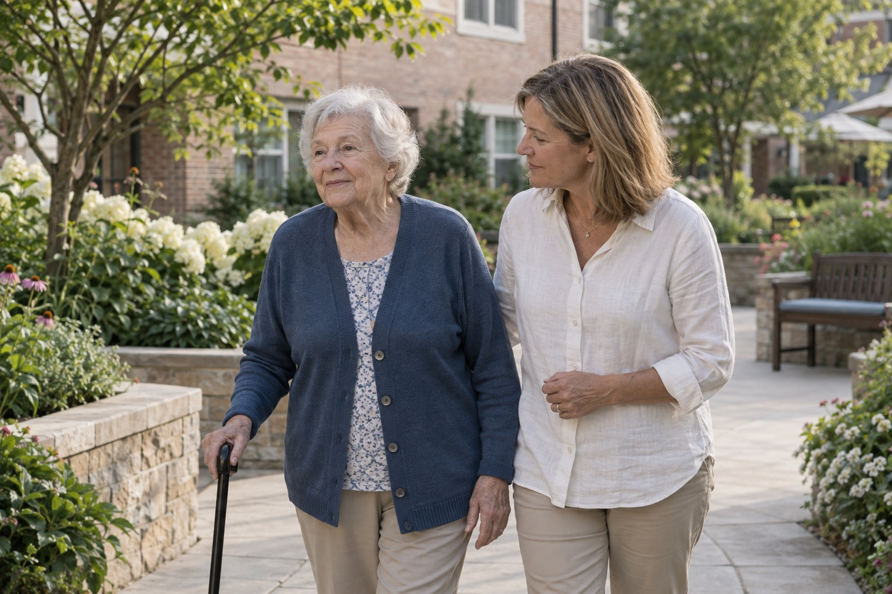

Aging in place remodeling
Make the home she loves work better for the life she lives now.
Keep it at home ↗ Let’s talk
Let’s talkA little help. A whole lot of love.
You promised to be there.
You didn’t promise to
do everything yourself.
For Mom. And for you.
Her needs may change. Your love doesn’t.
Let’s find the kind of help that fits her life—and yours.
Make the home she loves work better for the life she lives now.
Keep it at home ↗
A familiar helping hand for her. A little breathing room for you.
Keep it with help ↗
When home needs to change, the promise comes with her.
Explore somewhere new ↗You don’t have to know which one yet. We can work through that together. ↗
For the person holding it all together.
You didn’t break the promise.
The care needs changed.
So the way you keep it can change, too.
For the part of you that feels guilty ↗her say.The Mom We Should Know
How she takes her tea. The name she likes to be called. What she’d rather do herself.
She’s a whole person. Good care starts by listening to her, too.
Mom, this page is yours ↗What Mom wants. What’s getting harder. What you can keep doing, and where you need help.
Who provides the help. What it includes. What it costs. You deserve plain answers before deciding.
Today’s answer doesn’t have to be forever. Her preferences and changing needs stay in view.
Open to read. Nothing to fill out.
A gentle beginning
You don’t need a plan. Just a place to start.
Find your next step ↗